Project 2 — CS280A
Fun with Filters and Frequencies!
Part 1: Fun with Filters
Part 1.1 Convolutions from Scratch
I wrote convolution with only numpy, in two versions: one with four for loops and one with two
(the inner patch sum is done by numpy). Both flip the kernel first and support zero padding in
'same' and 'full' mode, using the same padding offsets as
scipy.signal.convolve2d so the outputs line up exactly.
def pad_zeros(im, kh, kw, mode='same'): if mode == 'full': top, bottom, left, right = kh - 1, kh - 1, kw - 1, kw - 1 elif mode == 'same': top, bottom, left, right = kh // 2, (kh - 1) // 2, kw // 2, (kw - 1) // 2 H, W = im.shape padded = np.zeros((H + top + bottom, W + left + right)) padded[top:top + H, left:left + W] = im return padded
# four for loops def conv2d_four_loops(im, kernel, mode='same'): kh, kw = kernel.shape k = kernel[::-1, ::-1] # flip the filter padded = pad_zeros(im, kh, kw, mode) out_h = padded.shape[0] - kh + 1 out_w = padded.shape[1] - kw + 1 out = np.zeros((out_h, out_w)) for i in range(out_h): for j in range(out_w): acc = 0.0 for m in range(kh): for n in range(kw): acc += padded[i+m, j+n] * k[m, n] out[i, j] = acc return out
# two for loops def conv2d_two_loops(im, kernel, mode='same'): kh, kw = kernel.shape k = kernel[::-1, ::-1] # flip the filter padded = pad_zeros(im, kh, kw, mode) out_h = padded.shape[0] - kh + 1 out_w = padded.shape[1] - kw + 1 out = np.zeros((out_h, out_w)) for i in range(out_h): for j in range(out_w): out[i, j] = np.sum( padded[i:i+kh, j:j+kw] * k) return out
To check correctness I compared both against scipy.signal.convolve2d on a random image with
a bunch of kernel shapes (3×3, 1×3, 3×1, 4×4, 5×2, 9×9) in both modes. Every case matched
(np.allclose = True). Then I ran a 9×9 box filter on my (grayscale, 300×225) selfie:
| Method | Runtime | Max difference vs scipy |
|---|---|---|
| four loops | 0.683 s | 1.0e-15 |
| two loops | 0.094 s | 5.6e-16 |
| scipy.signal.convolve2d | 0.006 s | — |
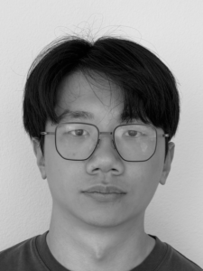
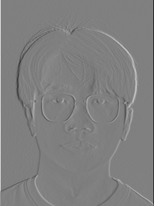
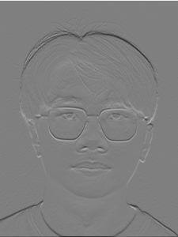
Runtime & boundaries
- Runtime: four loops is the slowest since every single multiply-add runs in Python. Two loops is ~7× faster because numpy does the patch sum. scipy is compiled C and is another ~15× faster than that.
- Boundaries: with zero padding, the box-filtered image gets darker near the border (the window averages in zeros), and Dx/Dy show a fake strong edge along the image border. scipy's default
boundary='fill'does the same thing, which is why they match. From 1.2 on I use scipy withboundary='symm'(mirror padding) to get rid of those fake edges.
Part 1.2 Finite Difference Operator
Convolving the cameraman with Dx = [1, 0, −1] and Dy = [1, 0, −1]T
gives the partial derivatives. The gradient magnitude is just
sqrt(dx² + dy²), which is big wherever the intensity changes fast in any direction.
Thresholding it gives a binary edge image.

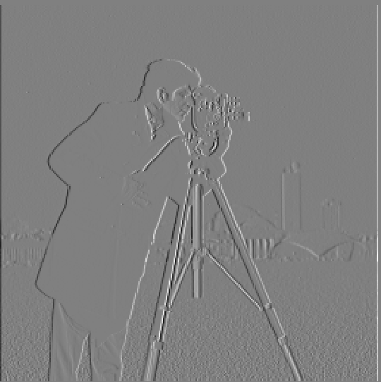
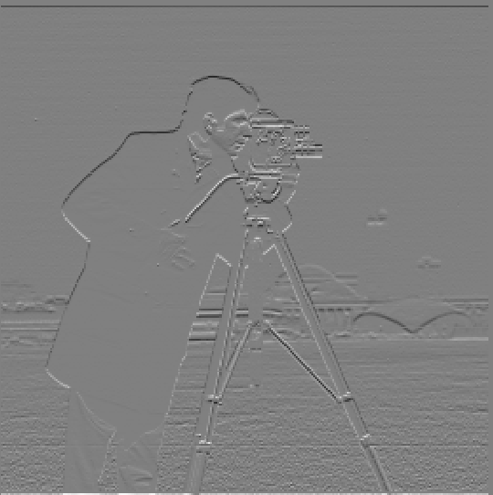

Threshold sweep
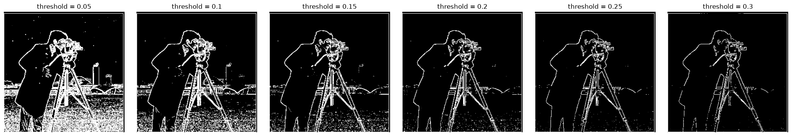

Picking the threshold
Low thresholds (0.05–0.10) keep every real edge, but the grass turns into white speckle. High ones (≥ 0.25) clean the grass but break up weaker real edges like the coat and the buildings in the back. I went with 0.15: the cameraman, camera and tripod outlines stay mostly connected and most of the grass noise is gone. A bit of speckle is left, but removing all of it would cost real edges. The root problem is that Dx/Dy only look at neighboring pixels, so they amplify noise — which 1.3 fixes.
Part 1.3 Derivative of Gaussian (DoG) Filter
I built the 2D Gaussian with cv2.getGaussianKernel (a 1D column g) and took the
outer product G = g @ g.T. I used σ = 2 with size 2⌈3σ⌉+1 = 13, so it
covers ±3σ. First I blur the cameraman with G, then repeat the finite difference steps from 1.2.
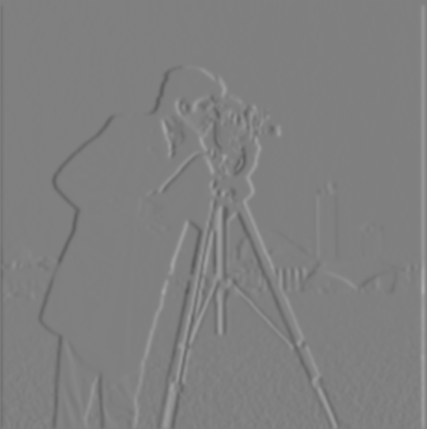
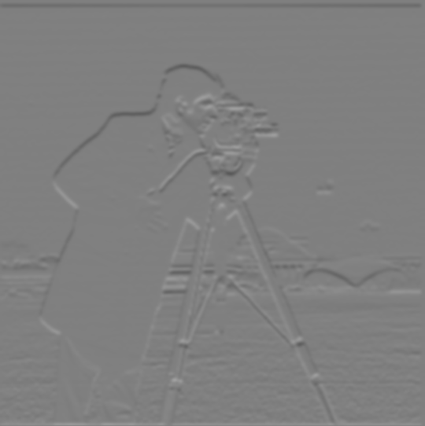
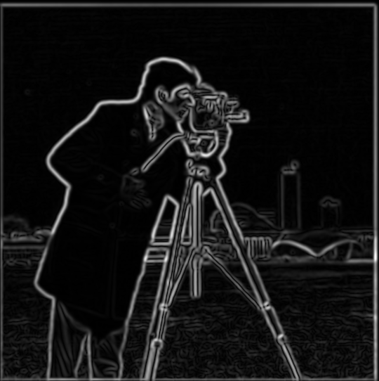
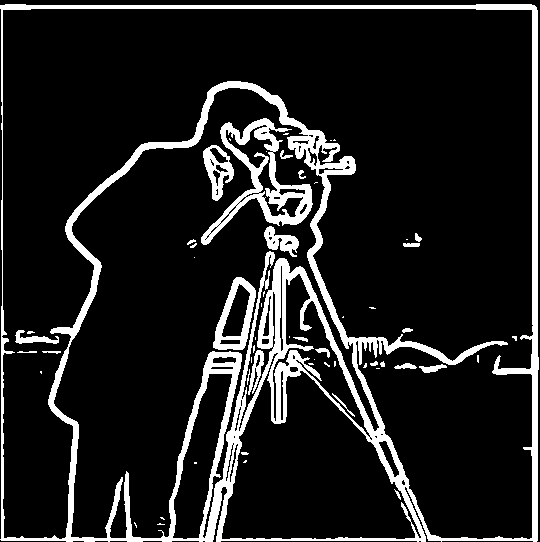
Threshold sweep (after blurring)
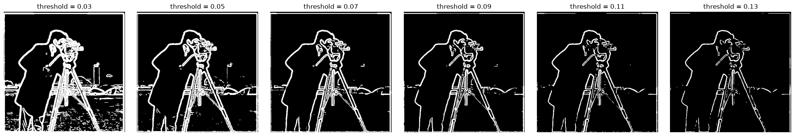
Finite difference vs. Gaussian first
What differences do I see?
- Way less noise. The Gaussian kills the high frequencies before differentiating, so the grass barely shows up anymore.
- Thicker, smoother edges. Edges are a few pixels wide and continuous instead of thin and broken. Tiny details (background buildings, thin tripod bits) get weaker though.
- Lower threshold. Blurring also lowers the peak gradient, so the best threshold dropped from 0.15 to 0.07.
Doing it in one convolution: DoG filters
Since convolution is associative, (I * G) * Dx = I * (G * Dx). So I convolve
G with Dx and Dy once to get the DoG filters, then only need one convolution per direction.
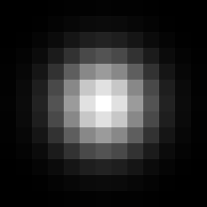
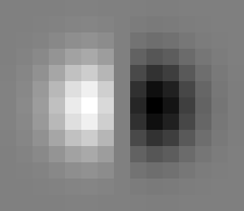
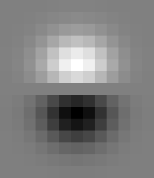

Same result?
Yes. The DoG filters look like a smoothed [1, 0, −1]: one bright lobe and one dark lobe. Compared with blur-then-differentiate,
the max difference in dx is about 1.05e-15, in dy about 9.7e-16
(just floating point), and 0 edge pixels differ.
Part 1 · Bells & Whistles Gradient Orientation in HSV
The orientation at each pixel is θ = atan2(dy, dx), the direction the intensity increases fastest.
Since built-in angle functions aren't allowed, I wrote my own atan2 using only +, −, ×, ÷ and sqrt.
Here x = dx and y = dy of a pixel. The idea: squeeze the angle down to something tiny where a Taylor series is super accurate,
then undo every squeeze at the end.
atan2 from scratch, step by step
-
Fold everything into the first octant. Throw away the signs and look at |x| and |y|. Divide the
smaller one by the bigger one:
t = min(|x|,|y|) / max(|x|,|y|). Now t is always in [0, 1], so arctan(t) is between 0 and π/4 (0°–45°). I remember two things for later: was |y| > |x| (did I "swap")? And what were the signs of x and y? (If x = y = 0 there's no gradient, so I just return 0.) -
Shrink t with the half-angle formula.
arctan(t) = 2 · arctan( t / (1 + √(1 + t²)) ). The new argument is always smaller, so the angle gets halved. I apply it twice: the angle goes from ≤ 45° to ≤ 11.25°, i.e. t ≤ tan(π/16) ≈ 0.199. The answer is 4 × arctan(new t). -
Taylor series on the tiny t.
arctan(t) = t − t³/3 + t⁵/5 − t⁷/7 + …With t ≤ 0.2 each term is ~25× smaller than the one before, so 12 terms already hit float64 precision. Multiply by 4 → this is arctan of the original t, call it a ∈ [0, π/4]. -
Unfold back to the full circle (in this order):
- if I swapped (|y| > |x|), the angle is measured from the other axis:
a = π/2 − a→ now [0, π/2] - if x < 0, mirror into the left half:
a = π − a→ now [0, π] - if y < 0, mirror into the bottom half:
a = −a→ now (−π, π]
- if I swapped (|y| > |x|), the angle is measured from the other axis:
For the visualization, hue = angle, saturation = 1, and value = gradient magnitude so flat areas, where the direction is basically random, go dark. I used the DoG gradients from 1.3 because the raw finite differences give very noisy angles.
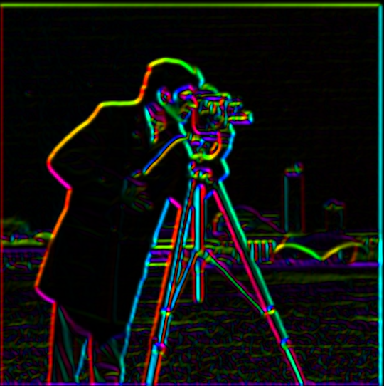
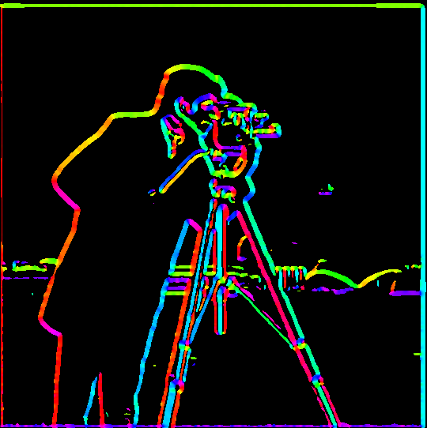
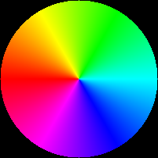
Part 2: Fun with Frequencies!
Part 2.1 Image "Sharpening"
The Gaussian is a low-pass filter, so I − I*G is exactly the high frequencies. Unsharp masking just adds
α times those back. Because convolution is linear, it all folds into one filter
(e is the unit impulse, so I * e = I):
Isharp = I + α(I − I*G) = I * ((1+α)e − αG)
The kernel sums to 1, so flat regions keep their brightness and only edges/texture get boosted. I used σ = 2 (13×13) and
checked the single convolution against the blur → subtract → add version: max difference 1.8e-15.
Taj Mahal

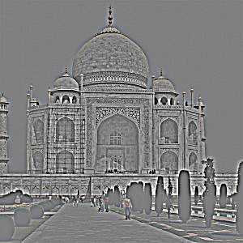

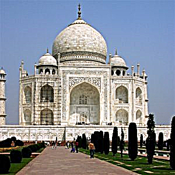
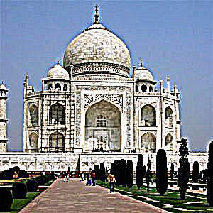
My cat
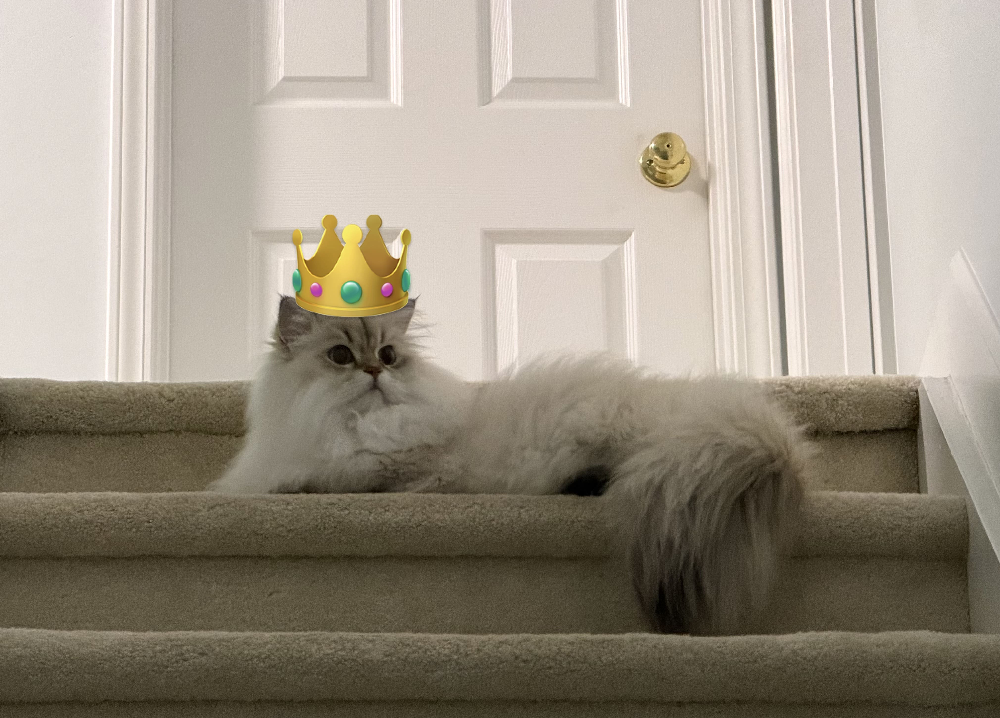
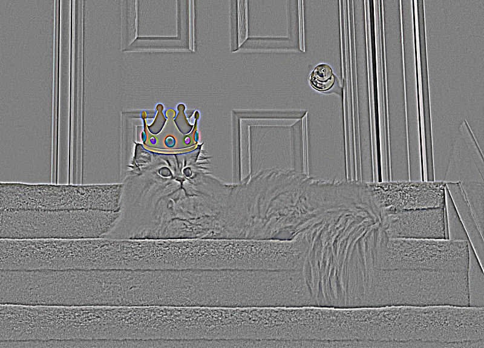
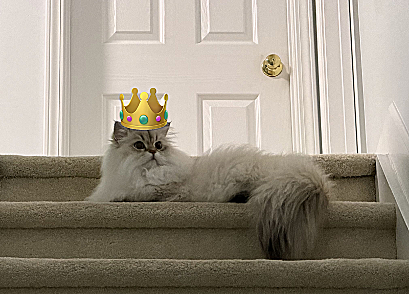
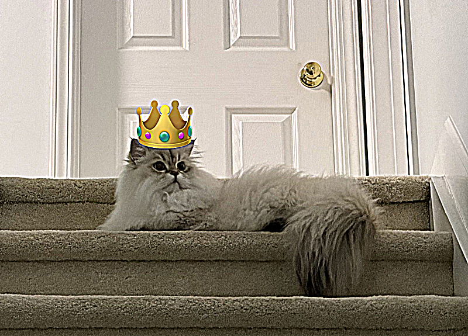
How α changes things
- α = 0.5–1: crisper, no visible artifacts. The Taj's carvings and the cat's whiskers pop more.
- α = 2: clearly sharper, but faint halos start showing on strong edges (dome vs. sky).
- α = 5: oversharpened — bright/dark halos around every edge, noise in the sky gets amplified, and the white marble clips.
Blur a sharp image, then try to sharpen it back
I cropped the cat's head (a sharp region), blurred it with the same Gaussian, and resharpened with different α. I compared each result to the original with PSNR (higher = closer to the original).
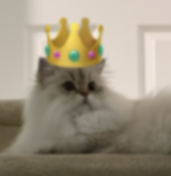
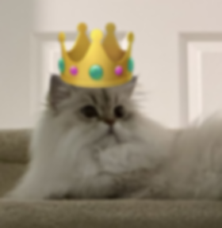
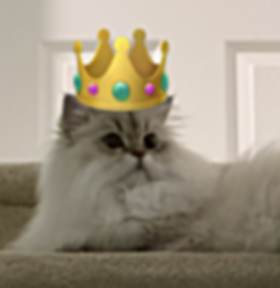
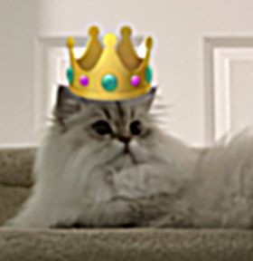
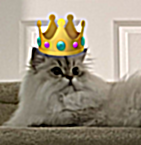
| blurred | α = 0.5 | α = 1 | α = 2 | α = 5 | α = 10 | |
|---|---|---|---|---|---|---|
| PSNR (dB) | 32.25 | 33.29 | 34.18 | 34.91 | 30.08 | 24.39 |
Observations
- A moderate α (1–2) makes it look sharper and actually gets closer to the original (best at α = 2, +2.7 dB).
- But it never gets the original back. Blurring wiped out the finest details (single hairs, whiskers), and sharpening can only amplify frequencies that are still there. So what we get is more edge contrast, not new detail.
- For big α (5, 10) it's even worse than the blurred input: halos, amplified noise, clipped colors. Sharpening is a perceptual trick, not a real inverse of blurring.
Part 2.2 Hybrid Images
A hybrid image = low frequencies of one image + high frequencies of another. Up close you see the high frequencies, from far away only the low ones survive. Low-pass is a Gaussian blur, high-pass is the image minus its blur (impulse − Gaussian):
H = I1 * Gσ1 + (I2 − I2 * Gσ2)
Before filtering, I align the two images with a similarity transform (scale + rotation + translation) from two point pairs, usually the two eyes. I read off the points on a pixel grid instead of clicking, so the alignment is reproducible.
Hybrid 1: Derek + Nutmeg (full process)
Originals and aligned

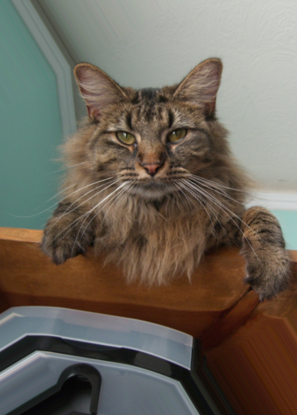
Filtered and hybrid
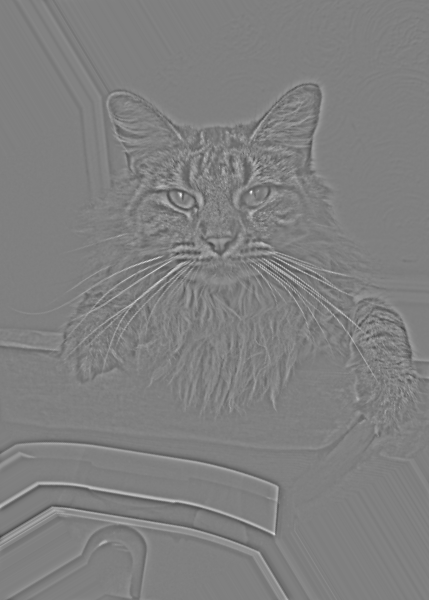
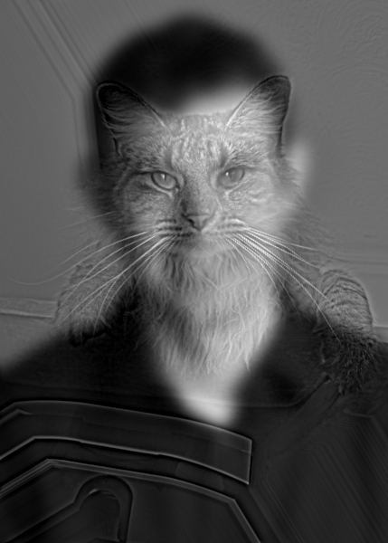
Log magnitude of the Fourier transforms
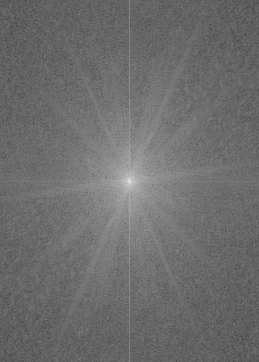
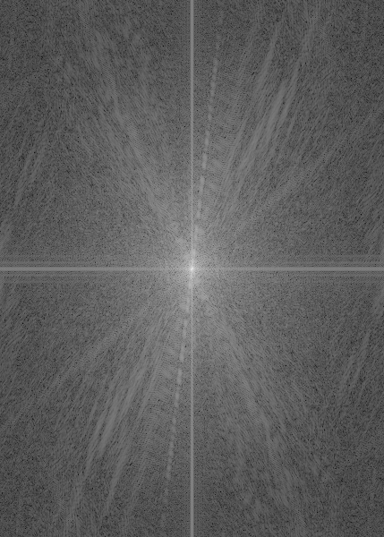
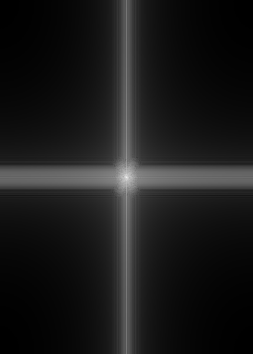
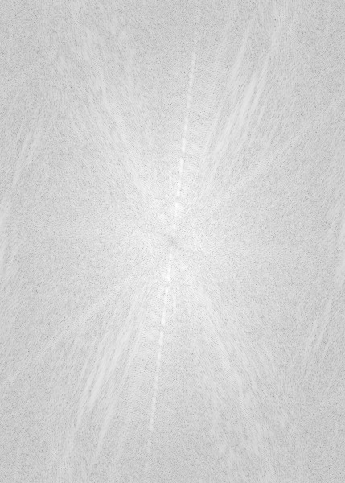
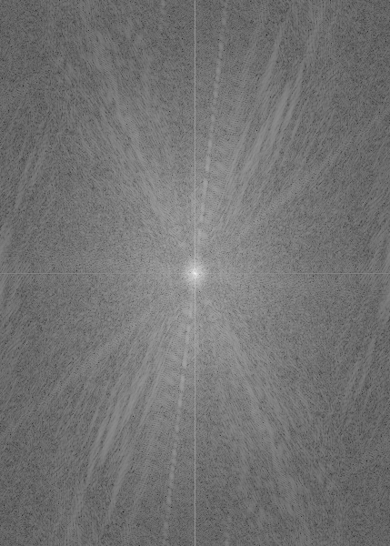
Frequency analysis
- Inputs: bright in the center (low freq) and fading out. The diagonal streaks in Nutmeg's spectrum come from strong straight edges like the whiskers; the cross comes from the image borders.
- Low-passed Derek: only a small bright blob in the center survives — the FT of a Gaussian is a Gaussian.
- High-passed Nutmeg: the center is dark, everything else is kept.
- Hybrid: Derek's center plus Nutmeg's outer detail.
Seeing it from "far away" (1, 1/2, 1/4, 1/8 size)
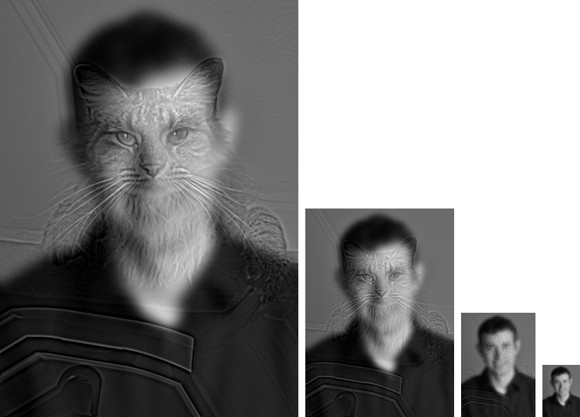
Cutoff frequency choice
I defined the cutoff as the frequency where the Gaussian keeps half the amplitude:
f = √(ln2 / 2) / (πσ). I ended up with σlow = 8 and
σhigh = 3. I swept through different values and tried changing one σ at a time:
- σlow = 4: Derek's eyes and smile stay too sharp and fight with the cat up close.
- σlow = 12: Derek gets too blurry to recognize even when small.
- σhigh = 2: only the thinnest cat details are left, so the cat gets fainter up close.
- σhigh = 5: too much of the cat's coarse shape leaks through, so you still see the cat from far away.
Changing σlow (σhigh = 3)
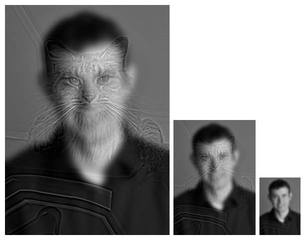
Changing σhigh (σlow = 8)
Hybrid 2: me + my cat
Me as the low frequencies (far away), my cat as the high frequencies (up close), aligned by the eyes. σlow = 8, σhigh = 3.
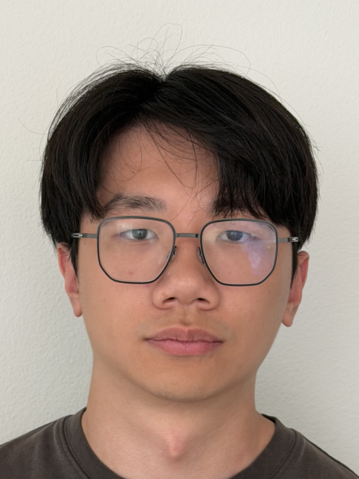
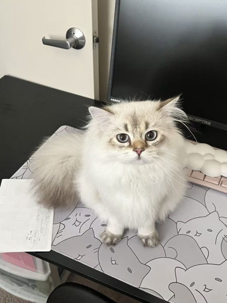
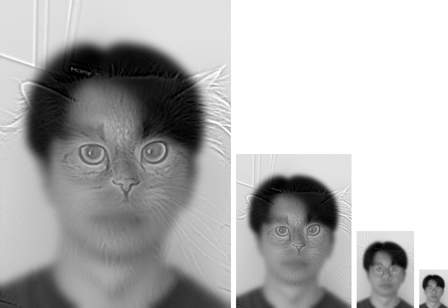
Hybrid 3: my cat's back + an onigiri
From behind, my cat is basically a rounded white triangle… just like an onigiri. My cat is the low frequencies and the onigiri the high frequencies. There are no eyes here, so I aligned the onigiri's peak and base center to the top of the cat's head and the middle of its body. I used σlow = 5, σhigh = 2, kept the cat in color, and scaled the (gray) onigiri detail by 0.8 so it doesn't overpower the fur.
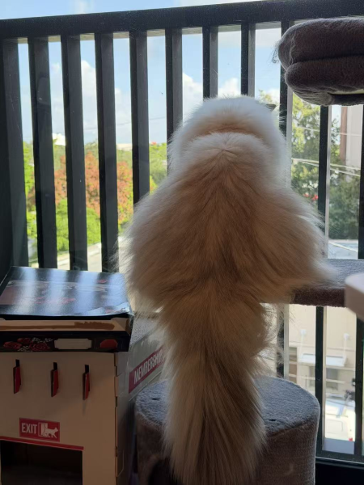
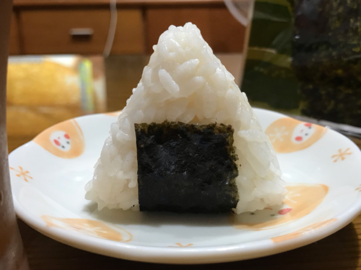
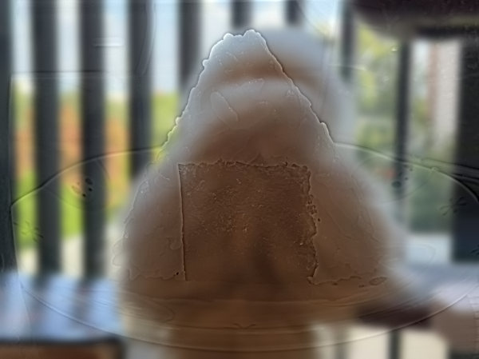
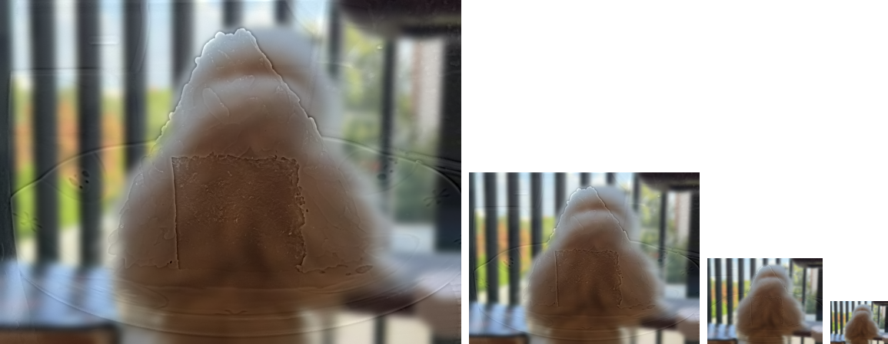
Part 2.2 · Bells & Whistles Using Color in Hybrids
I made every hybrid in four versions: color in neither part, only the low part, only the high part, or both. "Gray" means the image is converted to grayscale before filtering.
Derek + Nutmeg
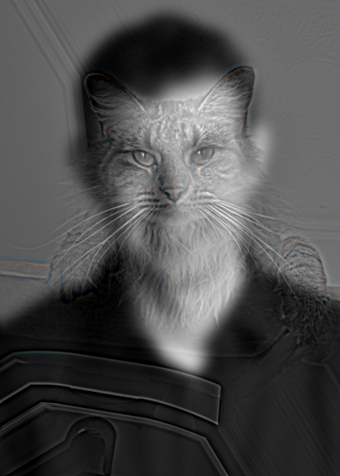
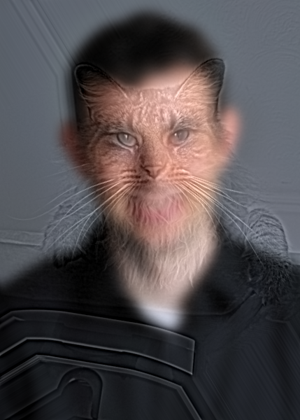
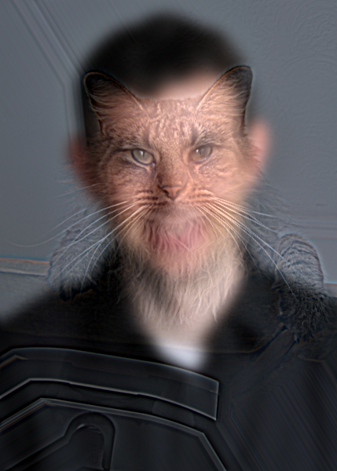
me + my cat
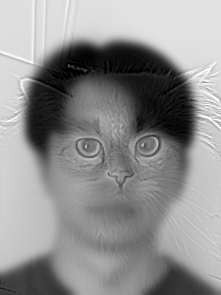
To back up what I saw, I split each image into a gray part and a color part (RGB − gray) and measured the RMS of what survives each filter:
| Hybrid | low-pass color RMS | high-pass gray RMS | high-pass color RMS |
|---|---|---|---|
| Derek + Nutmeg | 0.042 | 0.035 | 0.007 |
| me + my cat | 0.045 | 0.029 | 0.002 |
- Color high: looks almost the same as all-gray, just faint colored fringes on whiskers. The high-pass keeps 5–18× less color than gray detail, so there's barely any color left to see.
- Color low: a clear win. Skin, hair and background colors make the far-away face much stronger. The downside is that the color is also visible up close, so the face competes a bit with the cat.
- Both: basically the same as color low, since the high-freq color adds almost nothing.
Part 2.3 Gaussian and Laplacian Stacks
A stack is a pyramid without downsampling, so every level stays full size. I wrote it from scratch (no
pyrDown): the Gaussian stack starts with G0 = I and each level blurs the previous one
with σ = 1, 2, 4, 8, 16. The Laplacian stack is Li = Gi − Gi+1 (a band-pass
image), and the last level is just GN. That way the levels add back up to the original exactly —
I checked, the error is ~1e-16. I used 5 blur steps (6 levels).
Apple — Gaussian stack

Apple — Laplacian stack (stretched to [0, 1] for display)
Orange — Gaussian stack
Orange — Laplacian stack
Mask (vertical step) — Gaussian stack
Recreating Szeliski Figure 3.42
Each Laplacian level gets weighted by the matching level of the mask's Gaussian stack. Rows are levels 0, 2, 4 and the sum of all levels; columns are masked apple, masked orange, and the blend.

Observations
- L0 is only fine texture (orange peel dimples, the apple's highlight edge), middle levels are outlines, the last levels are big smooth patches of color.
- (a)–(c): at level 0 the mask is nearly sharp, so fine detail switches from apple to orange within a few pixels.
- (g)–(i): at level 4 the mask is very blurry, so the two colors mix over a wide band.
- (j)–(l): summing everything gives a seamless oraple — every band is blended over a width that matches its own scale.
Part 2.4 Multiresolution Blending
Build Laplacian stacks for images A and B, a Gaussian stack for the mask M (1 = take A), blend each level, then sum.
Fine details switch over at a sharp mask so they don't ghost, while coarse color is mixed through a very blurry mask so
there's no visible step. Quick sanity check: blending an image with itself gives back the image (error ~1e-16).
The oraple
The hard cut has an obvious seam. A single feather softens it, but the whole color change is squeezed into one narrow band, so you can still spot a line down the middle (and a wider feather would make the textures ghost into each other). The multiresolution version mixes the colors over a wide region while keeping the texture switch sharp, so the seam is the least noticeable.
Custom blend 1: half me, half my cat (straight seam)
I reused the eye-aligned pair from Hybrid 2, with a vertical seam right through my nose.
The seam is invisible where both sides are smooth (my cheek into white fur). Where the brightness is very different, like my light wall vs. the dark monitor behind the cat, it turns into a wide soft gradient instead of a line, since those differences live in the coarse levels.
Custom blend 2: cat latte (irregular mask)
My cat's face floating in a cup of coffee. I aligned the cat's eyes to a spot inside the cup, and used a circular mask a bit smaller than the coffee surface so the white rim stays sharp. I also tinted the cat cream-colored so it reads more like foam.
The process (like Fig. 10 in the paper)
Observations
- The hard cut looks like a sticker slapped on the coffee.
- In the blend, the fur fades into the dark coffee near the edge, leaving a thin dark ring like foam floating in the cup. The eyes, nose and fur stay crisp.
- In the stacks: level 0 of the cat is only whiskers and fine fur, cut sharply at the circle. Level 4 is a blurry blob that spreads beyond it. The masked coffee is the mirror image, with a gray (= zero) hole where the cat goes.
Part 2.4 · Bells & Whistles Color in Blending
All the blends above are in full color: each RGB channel gets its own Laplacian stack and is blended with the same mask stack. Here are grayscale versions for comparison, plus the latte with and without the cream tint.
Is color worth it? Yes.
- The gray versions blend just as smoothly but look flat. Color (orange vs. red, warm foam vs. dark coffee) is what sells the illusion.
- Blending per channel handles color for free: most color lives in the coarse levels, so color differences get spread over a wide area and never show up as a seam.
- The tint matters: the untinted gray-white cat looks like a cat photo in milk, the tinted one looks like latte foam. (I also tried matching the cat's average color to the coffee, but black coffee is so dark the cat basically disappears.)